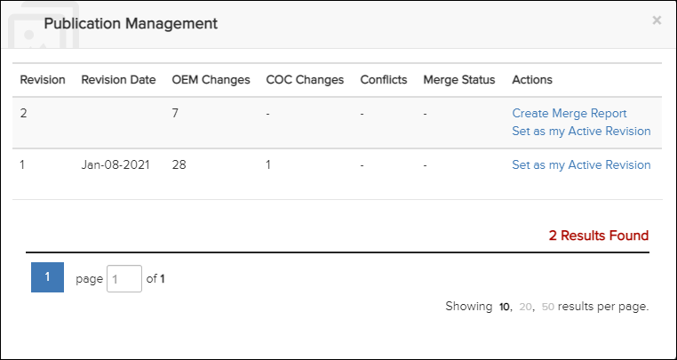

Not applicable for Pinpoint Standalone Light.
Users with the Can merge new revisions privilege can use the
Publication Management dialog to:
- Create merge reports
- View merge reports
-
Click the
 Manage Publication icon in the Table of
Content bar to open the Publication
Management dialog.
This is an example of the Publication Management dialog for a user with the Can merge new revisions privilege:
Manage Publication icon in the Table of
Content bar to open the Publication
Management dialog.
This is an example of the Publication Management dialog for a user with the Can merge new revisions privilege:
Publication Management Dialog
The Publication Management dialog provides the option to Create Merge Report. After the report is created, the option to View Merge Report is available. Refer to Create Merge Report and View Merge Report.
Refer to Publication Management for more information on this dialog.